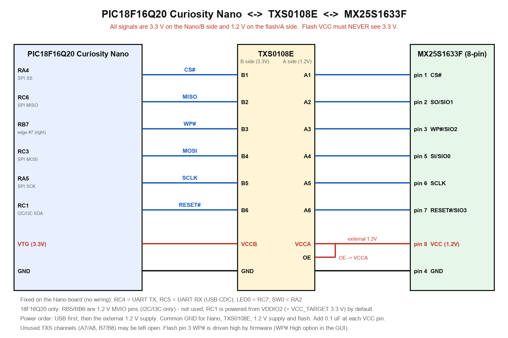
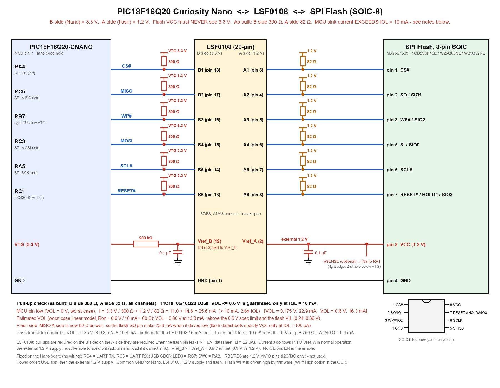

依據 DOC/PIC18F16Q20-CNANO-UserGuide-DS50003588.pdf（Figure 1-3 Pinout、Table 3-2、LED/SW）與 DOC/MX25S1633FVer13_Microchip.pdf。

（向量圖：wiring_CNANO_TXS0108E_MX25S1633F.svg；由 tools/make_wiring_diagram.py 產生）
[PC GUI] --USB-C--> [Curiosity Nano] 板載 debugger：USB CDC <-> UART（RC4 TX / RC5 RX，已在板上連好）
│ VTG = 3.3V
└ 6 條 SPI/控制線 --3.3V--> [TXS0108E B側 | A側] --1.2V--> [MX25S1633F]| 功能 | Nano 邊緣位置 | PIC18F16Q20 | TXS0108E（B→A） | MX25S1633F |
|---|---|---|---|---|
| CS# | 左排 SPI SS | RA4 | B1 → A1 | pin 1 CS# |
| MISO | 左排 SPI MISO | RC6 | B2 → A2 | pin 2 SO/SIO1 |
| WP# | 右排，VTG 往下第 7 孔 | RB7 | B3 → A3 | pin 3 WP#/SIO2 |
| MOSI | 左排 SPI MOSI | RC3 | B4 → A4 | pin 5 SI/SIO0 |
| SCLK | 左排 SPI SCK | RA5 | B5 → A5 | pin 6 SCLK |
| RESET# | 左排 I2C SDA（18F16Q20 絲印為 I3C1 SDA） | RC1 | B6 → A6 | pin 7 RESET#/SIO3 |
| 3.3V（VCCB） | VTG | VTG | VCCB | — |
| 1.2V（VCCA） | 外接 1.2V 電源 | — | VCCA、OE | pin 8 VCC |
| VSENSE（選配） | 右排，VTG 往下第 2 孔 | RA1 | — | 接 1.2V 軌（VCCA / flash VCC），韌體以 ADC 量測 |
| GND | GND | GND | GND | pin 4 GND |
NC、ID、CDC RX、CDC TX、DBG1、DBG2、UART TX(RC4)、UART RX(RC5)、I2C SDA、I2C SCL、SPI MOSI、SPI MISO、SPI SCK、SPI SS、GND，接線以板上絲印為準。VBUS、VOFF、DBG3、DBG0、GND、VTG、RA0、RA1、RB5、RB6、RC7(LED0)、NC、RB7、RA2、GNDfirmware/src/main.c 檔頭。CURIOSITY 磁碟機）、虛擬序列埠（Curiosity Virtual COM Port）。
（向量圖：wiring_PIC18F16Q20-CNANO_LSF0108_SPIFlash_SOIC8.svg；由 tools/make_wiring_diagram_lsf0108.py 產生。依據 DOC/LSF0108.pdf（SDLS966M）與 DOC/LSF0108_EVK.pdf。）
信號與 Nano 腳位和上面的 TXS0108E 版完全相同（CS# = RA4、MISO = RC6、WP# = RB7、MOSI = RC3、SCLK = RA5、RESET# = RC1），只是 TXS0108E 換成 LSF0108，flash 為 8-pin SOIC。LSF0108 是開關式（pass-gate）轉換器，與 TXS0108E 不同的地方：
| 項目 | LSF0108 的做法 |
|---|---|
| 方向 | 自動雙向，沒有方向腳、沒有 OE 腳 |
| 致能 | EN（pin 20）直接接 Vref_B（pin 19），並從 VTG 經 200 kΩ 偏壓；Vref_B 旁放 0.1 µF。EN 不可用推挽輸出直接驅動 |
| 電源 | Vref_B（pin 19）= VTG 3.3 V；Vref_A（pin 2）= 外接 1.2 V（同時接 flash pin 8）；要求 Vref_B ≥ Vref_A + 0.8 V（3.3 V / 1.2 V 符合）。無上電順序限制 |
| Vref_A 電流 | 正常工作時有電流流進 Vref_A，外接 1.2 V 電源必須能吸收，否則 1.2 V 軌會被推高 |
| 通道 | B1~B6（pin 18~13）↔ A1~A6（pin 3~8）；B7/B8、A7/A8 懸空 |
| 上拉電阻 | 兩側都要（B 側必要；A 側在 flash 腳漏電流 > 1 µA 時必要，資料手冊 ILI = ±2 µA，所以要接） |
目前硬體：B 側（3.3 V）300 Ω × 6；A 側（1.2 V）82 Ω × 6（含 MISO）。 2026/10/26 由 750 Ω / 240 Ω（MISO A 側 1 kΩ）改成此值。
灌電流算法：某條線被 MCU 拉低時，B 側與 A 側（經 LSF0108 導通）兩顆上拉電阻的電流都流進 MCU 腳位。PIC18F06/16Q20 資料手冊 D360：VOL ≤ 0.6 V 只保證在 IOL = 10 mA 以內（VPIN = 3.0 V），所以
I_sink = (3.3 V − VOL) / R_B + (1.2 V − VOL) / R_A
| 項目 | 算式 | 結果 | 對照 IOL = 10 mA |
|---|---|---|---|
| MCU 腳位拉低（最壞，VOL = 0 V） | 3.3 V / 300 Ω + 1.2 V / 82 Ω = 11.0 + 14.6 | 25.6 mA | 超過 2.6 倍 |
| VOL = 0.175 V | (3.3 − 0.175)/300 + (1.2 − 0.175)/82 = 10.4 + 12.5 | 22.9 mA | 超過 |
| VOL = 0.6 V（規格上限） | (3.3 − 0.6)/300 + (1.2 − 0.6)/82 = 9.0 + 7.3 | 16.3 mA | 超過 |
| 估計 VOL（線性模型） | D360 換算 Ron = 0.6 V / 10 mA = 60 Ω；VOL = (3.3/300 + 1.2/82) / (1/300 + 1/82 + 1/60) | 約 0.80 V（電流約 13.3 mA） | VOL 超過 0.6 V 規格 |
| MISO（flash SO 拉低） | 3.3 V / 300 Ω + 1.2 V / 82 Ω | flash 灌入 25.6 mA | flash 只規格到 IOL = 100 µA |
| 通過 LSF0108 pass transistor（VOL = 0.35 V） | B：(3.3 − 0.35)/300；A：(1.2 − 0.35)/82 | 9.8 mA / 10.4 mA | 低於 LSF0108 的 15 mA 上限 |
| 6 條線同時為低 | VTG：6 × 11.0 mA；1.2 V 軌：6 × 14.6 mA | 約 66 mA / 約 88 mA | — |
Pin drive 設定是針對 TXS0108E 調整的，換 LSF0108 後請重新執行 📶 Link Test。ERR:vio），GUI 顯示紅色 OUT OF RANGE。CMD: 檔案改過目標電壓，請先改回 3.3V。